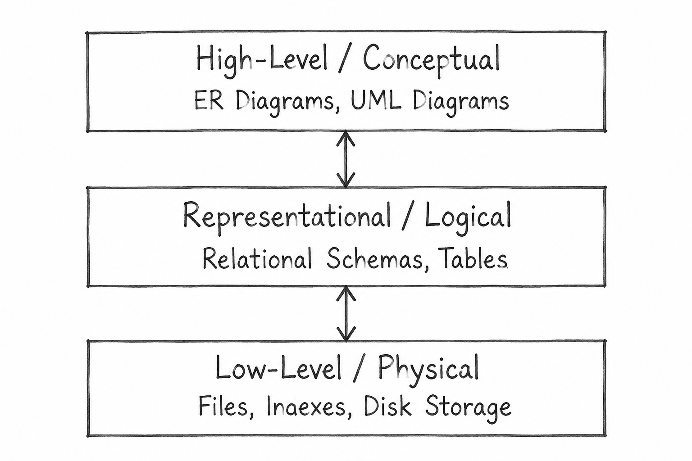

Q27. Discuss the Degrees of Abstraction in a Database System with a Neat Diagram.
1. Introduction
Degrees of Data Abstraction explain how data is described at different levels, from how it is stored in a computer to how users understand it.
There are three degrees of data abstraction:
- Low-Level / Physical Model
- Representational / Logical Model
- High-Level / Conceptual Model
2. Diagram: Degrees of Data Abstraction

3. Degrees of Data Abstraction
1. Low-Level / Physical Model
- It is the lowest level of data abstraction.
- It explains how and where data is actually stored in the computer.
- Data is stored in files on a disk.
- Indexes are used to find stored data quickly.
Example: Student marks are stored in a file on disk. An index helps the database find a student's marks quickly.
2. Representational / Logical Model
- It is the middle level of data abstraction.
- It explains how data is arranged inside a database.
- Data is organized into tables with rows and columns.
- It also shows how different tables are connected, without explaining how they are stored on disk.
Example: A STUDENT_MARKS table contains three columns: Student_ID, Course_ID, and Marks.
3. High-Level / Conceptual Model
- It is the highest level of data abstraction.
- It explains data in a way that people can easily understand.
- It identifies the main entities and the relationships between them.
- ER Diagrams and UML Class Diagrams are used to represent this level.
Example: A student studies different courses and receives marks in each course.